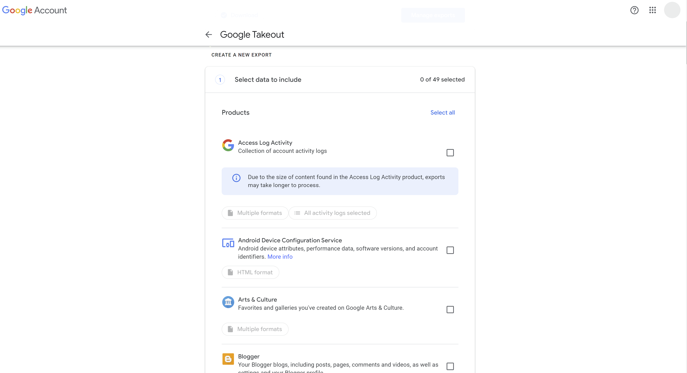
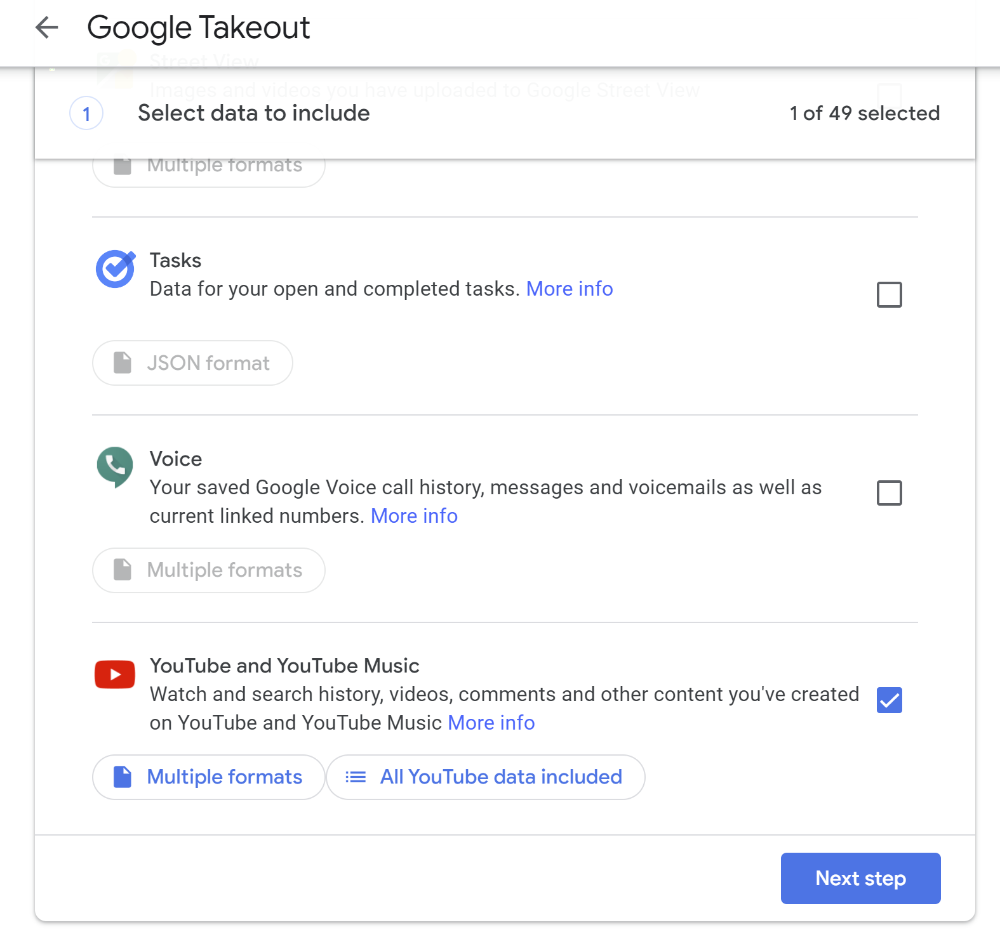
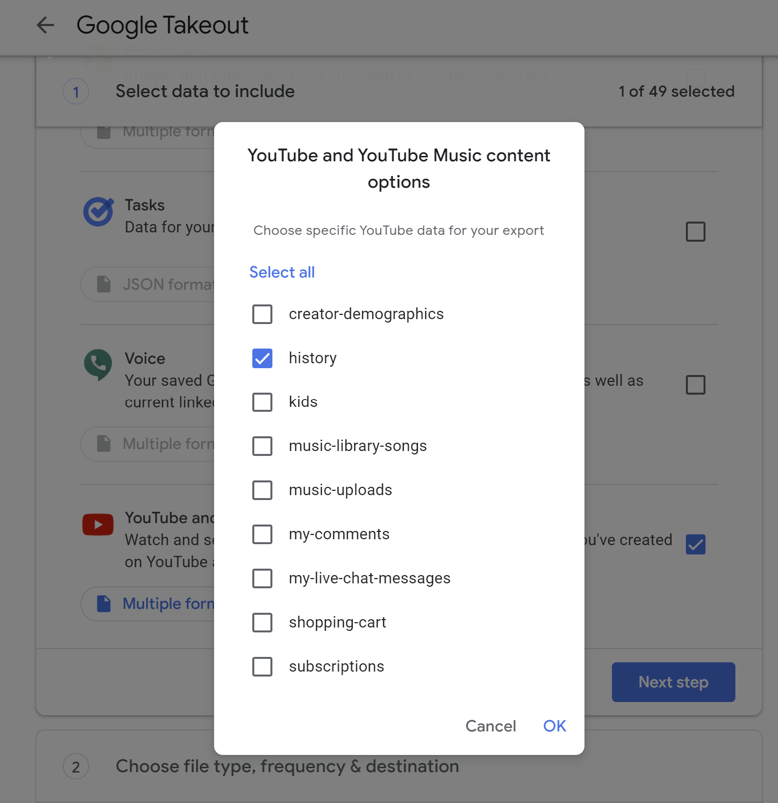
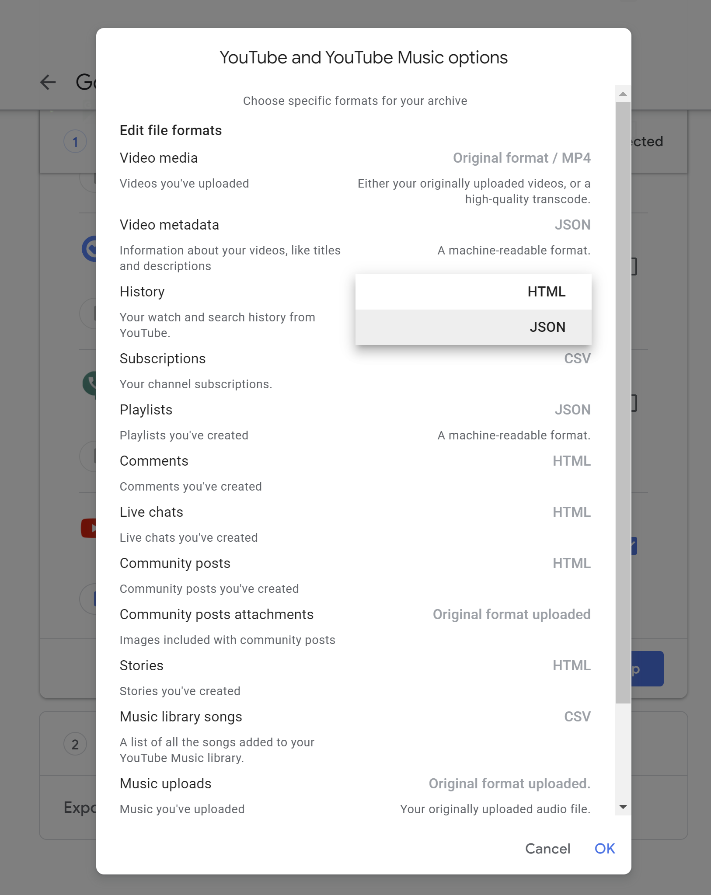
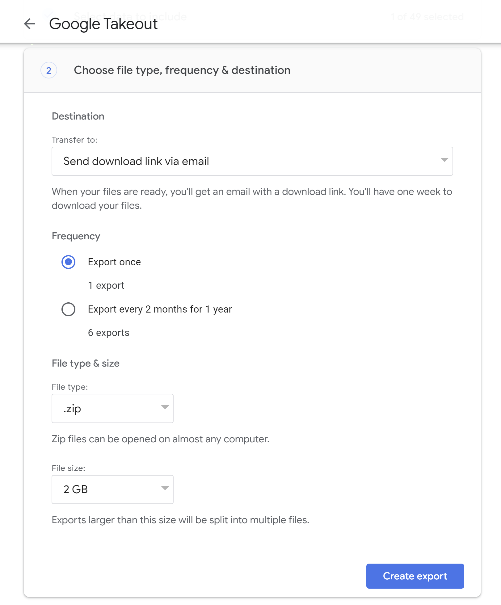
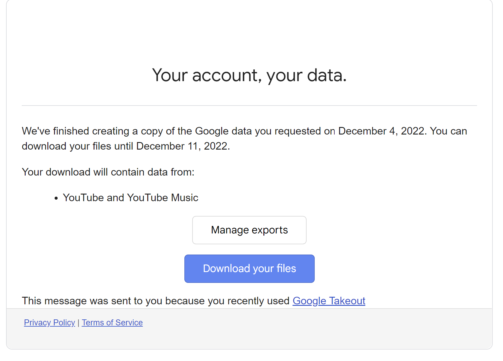

Login
If not connected, login with the Google account associated to your YouTube account
Create an export
Go to "CREATE A NEW EXPORT" Section

Select YouTube & YouTube Music
Select to export YouTube and YoutTube Data

Select YouTube History
We only need the watch history. Click on "All Youtube data included" then deselect everything and select "history" and click "OK"

Select JSON format
We need the JSON format to be able to extract the data, click on "Multiple formats" and in "History" section change "HTML" to "JSON". Then click OK

Go to next Step and export
Click on "Next Step". Leave all parameters by default. (as shown in the picture below). And finally click on "Create export"

Wait...
Google is now creating your export. It usually takes less than 5 minutes.
Your will receive an email as shown in the picture below.
Just click on "Download your files"

Extract the history JSON file
After downloading the file, your should open it with your favourite ZIP application.
Extract the content of the ZIP file, and you should find the history JSON file in :
Takeout\YouTube and YouTube Music\history\watch-history.json
Upload the file
Go to
Home page and click on "Upload YouTube watch History (*.json)".
In few seconds you will get your 2022 usage report.
- Top 5 videos
- Top 20 channels
- Top 100 videos